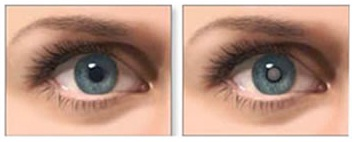
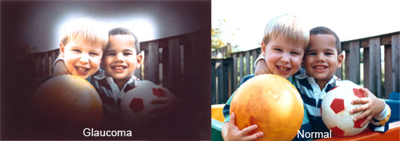
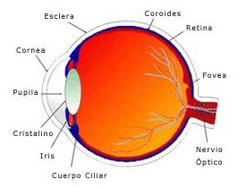
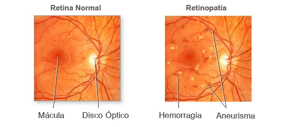
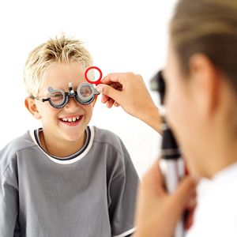
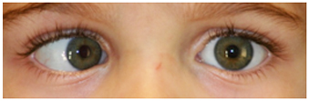
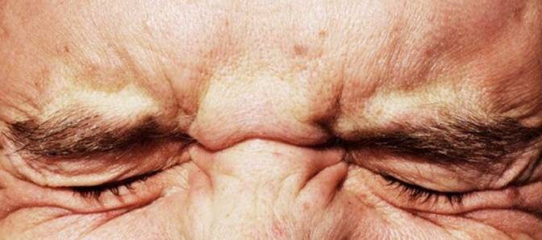
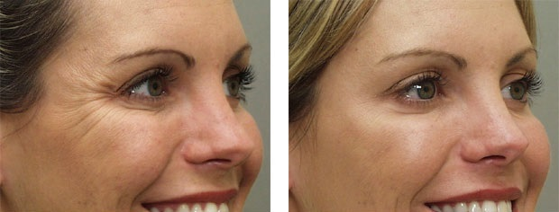
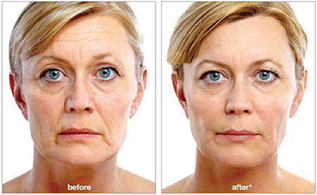

La catarata es la pérdida de transparencia del cristalino, una lente ubicada detrás de la pupila cuya función es enfocar nitidamente los objetos. Con el paso de los años u ocasionalmente, por alguna enfermedad o traumatismo, el cristalino pierde su transparencia natural y se convierte en una lente opaca. Esto se traduce en una disminución progresiva de la visión a medida que la catarata avanza, pérdida de nitidez en las imágenes y brillo de los colores. Algunos pacientes de cataratas pueden corregir su pérdida de visión con un cambio en la prescripción de sus anteojos; no obstante, cuando los problemas de la vista interfieren con sus actividades diarias, lo recomendable es la cirugía.
El Glaucoma es una enfermedad degenerativa causada por el aumento de la presión dentro del ojo (tensión ocular) que progresivamente va dañando el nervio óptico, cuyas células mueren, con la consecuente disminución del campo visual. Esto es debido a que el nervio óptico es como un “cable” que envía todas las imágenes percibidas por la retina, al cerebro. A aumentar la presión ocular se produce muerte de células del nervio óptico y pérdida de campo visual irreversible. Al principio, el aumento de la presión ocular no produce ningún síntoma. Es una enfermedad traicionera, ya que cuando comienza es silenciosa. Por eso la importancia de los controles periódicos y detección precoz , en especial en personas que tienen factores predisponentes.
Los síntomas posteriores pueden incluir un estrechamiento de la visión periférica, ligeros dolores de cabeza y sutiles trastornos visuales, como ver halos alrededor de la luz , o presentar dificultad para adaptarse a la oscuridad. Finalmente, la persona puede acabar presentando visión en túnel o en “caño de fusil” (un estrechamiento extremo de los campos visuales que dificulta ver objetos a ambos lados cuando se mira hacia el frente). A través de la medición de la presión intraocular, una prueba indolora que se realiza en pocos minutos, se puede sospechar la existencia del glaucoma . La perimetría o examen del campo visual y la oftalmoscopia u observación del nervio óptico en el fondo de ojo.
Existen diferentes tratamientos para esta enfermedad. El glaucoma primario de ángulo abierto (el 90 por ciento de los casos) suele aparecer entre los mayores de 55 años, personas que presentan diabetes o miopía. El tratamiento del glaucoma primario de ángulo abierto puede controlarse con medicación tópica (gotas) tratamiento con láser , cirugía o una implantación valvular, que facilite el drenaje. El glaucoma de ángulo cerrado es menos frecuente y puede manifestarse en forma aguda con dolor ocular, cefaleas, visión borrosa, náuseas y vómitos. Su tratamiento también se basa en gotas, láser o cirugía.
La retina es una delgada capa de tejido neurólogico sensible a la luz que cubre el interior del globo ocular. Es la encargada de capturar las imagenes y transmitirlas al cerebro a travesdel nervio óptico.
El desprendimiento de la retina, es la separación de una de las capas llamada neuroepitelio, de otra llamada epitelio pigmentario, con la formación de líquido entre ellas. Pueden ser regmatógenos, cuando comienza a partir de una rotura retinal (desgarros, agujeros en la retina); secundarios a otros procesos, llamados desprendimientos exudativos (por ejemplo en enfermedades sistémicas, o tumores); o traccionales, por la formación de membranas anormales de tracción, como en la diabetes, o en la proliferación vitreoretinal.
Provoca pérdida parcial o total de la visión, manifestándose como un telón. En algunos casos provocan síntomas previos como flashes luminosos, moscas volantes y manchas negras. Es una urgencia oftalmológica que debe ser tratada inmediatamente.
Las miodesopsias, comúnmente conocidas como "moscas volantes" o "cuerpos flotantes", son un defecto ocular cuyo síntoma es la visión de puntos o manchas de diferentes formas que se desplazan. Es uno de los motivos más frecuentes de consulta.
Las Miodesopsias son percibidas especialmente cuando miramos zonas de mucha claridad o superficies blancas y se desplazan con los movimientos que realizamos con los ojos.
Generalmente son inocuas, no comprometen la visión y aparecen como aglutinaciones del humor vítreo que con el paso de la luz proyectan su sombra en la retina. Se asocian a la edad y a la miopía elevada. Sin embargo , es necesario el control mediante fondo de ojos para descartar cualquier patología retiniana.
La retinopatía diabética es una complicación de la diabetes que resulta del daño de los vasos sanguíneos retinales.
La retinopatía diabética afecta ambos ojos en la mayoría de los casos, pero puede variar la intensidad en cada uno. Generalmente durante las primeras etapas, la enfermedad puede presentarse sin sintomatología. Sin embargo a medida que avanza, puede causar ceguera o una pérdida importante de la visión que en muchos casos es irreversible. Todas las personas que padecen diabetes tanto diabetes tipo 1 o tipo 2, corren el riesgo de desarrollar retinopatía diabética y este riesgo aumenta con el correr del tiempo. El embarazo aumenta el riesgo de desarrollar retinopatía diabética.
Por esta razón, para proteger su visión, es fundamental el manejo cuidadoso de la diabetes y realizar controles oftalmológicos frecuentes.
El diagnóstico se realiza mediante un examen del fondo del ojo. Es un estudio completamente indoloro que realiza el oftalmólogo y para el cual es necesario dilatar la pupila.
El tratamiento adecuado se determina dependiendo del tipo y gravedad de la retinopatía diabética.
Pueden requerirse únicamente controles periódicos o aplicaciones de láser .En casos más avanzados que conllevan hemorragias o desprendimiento de retina es necesaria la utilización de procedimientos de microcirugía intraocular . Este procedimiento llamado vitrectomía se realiza de manera ambulatoria.
La maculopatía es la enfermedad ocular que afecta la mácula, zona de la retina que nos permite tener la visión central y la discriminación de los colores.La maculopatías pueden ser secas o húmedas (exudativas)
Las maculopatías secas se desarrolla gradualmente y sin dolor. Pueden notarse estos cambios en la visión a medida que avanza la enfermedad: - La necesidad de una luz cada vez mas brillante al leer o hacer trabajos de cerca. - Dificultad para la adaptación a bajos niveles de luz como al entrar a un restaurante o a una habitación con poca luz. - Aparición de puntos ciegos en el centro del campo visual combinados con una profunda caída de la nitidez (agudeza) de su visión central.
No existe tratamiento para este tipo de maculopatía, sin embargo, la visión puede ser ayudada con lentes de visión subnormal.
Las maculopatías húmedas los siguientes signos y síntomas pueden aparecer y avanzar rápidamente: Distorsiones visuales, las líneas rectas pueden aparecer onduladas o torcidas u objetos que aparecen más pequeños o más lejos de lo que realmente están. Tambien se acompaña de disminución de la visión central. El tratamiento puede realizarse con láser, cirugía o Antagonistas del Factor de Crecimiento Vascular Endotelial (antiVEGF) intravitreo.
Esta especialidad se ocupa de los trastornos de la visión acontecidos en el niño desde su nacimiento
La visión del ser humano se consolida definitivamente entre el séptimo y el octavo año de vida, período que denominamos de plasticidad ocular. La oftalmología pediátrica es la encargada de diagnosticar las patologías visuales que, de no ser corregidas a tiempo, podrían acarrear daños irreversibles en el sistema visual
Algunas de las enfermedades que pueden padecer los niños son: estrabismo (mala alineación ocular), catarata congénita, glaucoma congénito, obstrucción lagrimal, tumores intraoculares (retinoblastoma) o retinopatía del prematuro.
El estrabismo es una condición en la cual los ojos están desalineados y apuntan en distintas direcciones.
Se puede manifestar desde la infancia o ser adquirido posteriormente por situaciones médicas o neurológicas. En el primer caso, suele producir disminución de la visión, y en el segundo, visión doble. El estrabismo se puede tratar con anteojos, con anteojos con prismas, con ejercicios ortópticos o con una intervención quirúrgica.
Los músculos que permiten el movimiento sincrónico de los ojos, actúan como “riendas”, permitiendo su alineación y que enfoquen el mismo objeto. Si esto no ocurre, cada ojo se dirigirá hacia un objeto diferente y el cerebro recibirá dos imágenes en lugar de una generando confusión.
En los niños, el cerebro puede aprender a ignorar la imagen proveniente del ojo más débil. (suprime la imagen) Es muy imporante la detección y tratamiento si el estrabismo aparece en niños antes de los 6 años de edad, ya que si no es tratado puede llevar a la ambliopía (fallo en el desarrollo visual- ojo perezoso) que no podrá ser tratada luego de esa edad.
Enfermedades asociadas, hipermetropía, antecedentes familiares de la enfermedad son factores de riesgo.
El tratamiento consta de prescripción de lentes, parches de oclusión o cirugía.
El blefaroespasmo es una enfermedad de los músculos de los párpados en la que existe una contracción espasmódica con cierre de los mismos en forma involuntaria y repetida, que incapacita a la persona que lo padece.
Suele ser progresiva, comenzando con parpadeo, pestañeo o movimientos semejantes a tics nerviosos que con el transcurso de los años se hacen más frecuentes y duraderos pudiendo generar, en las personas que lo padecen, grandes dificultades para realizar sus actividades habituales y una gran incapacidad. Puede Ser de uno o ambos ojos .Algunas personas pueden convertirse en ciegos funcionales: tienen dificultades para leer, conducir, salir solos a la calle, etc. Los síntomas suelen iniciarse en la quinta y sexta década de la vida y es tres veces más frecuente en mujeres.
Aunque no tienen una cura definitiva, el tratamiento del blefaroespasmo les devuelve a estos pacientes, temporalmente una vida normal. Se inyectan pequeñas cantidades de toxina botulínica en los músculos afectados y en los próximos 5 a 10 días comienza a evidenciarse la disminución de los movimientos anormales.
El ojo seco es una alteración de la superficie externa del ojo que se origina cuando la producción de lágrimas es insuficiente o sus componentes son de mala calidad. Esto ocasiona una deficiencia del film lagrimal, lo que provoca zonas secas sobre la conjuntiva y fundamentalmente sobre la córnea dado que no se lubrica correctamente.
Los síntomas que pueden presentarse son :Sensación de cuerpo extraño basuritas o arenilla, fotofobia, visión borrosa, ardor, ojos rojos, lagrimeo (paradóico).
El tratamiento se realiza con medicaciones en manera de colirios, basado especialmente en lágrimas artificiales. La terapia quirúrgica se indica solamente en casos severos, cuando el tratamiento médico no es efectivo, siendo ésta la colocación de tapones lagrimales con la finalidad de retener la lágrima. Este procedimiento se realiza con anestésico tópico.
TOXINA BOTULÍNICA TIPO A
Actúa relajando la musculatura local donde es aplicada, impidiendo la contracción muscular y la visualización de arrugas dinámicas. También actúa como uso preventivo para la formación de arrugas de contracción.
El máximo efecto es visto a los 7 o 10 días de aplicado y el mismo tiene una duración de 4 a 5 meses aproximadamente. Su aplicación es en el tercio superior de la cara: patas de gallo, entrecejos, frente, contribuye a la elevación de la cola de ceja obteniendo una expresión más juvenil y relajada.
Es un procedimiento simple, rápido y no quirúrgico realizado el consultorio médico, por el médico, no requiere internación , pudiendo el paciente volver a sus tareas habituales de inmediato
RELLENOS FACIALES COSMÉTICOS
Ácido Hialurónico: Es un componente presente naturalmente en nuestra piel, sobre todo cuando somos jóvenes. Es el encargado de mantener firme e hidratada la piel. A medida que envejecemos se va perdiendo este valioso componente, haciendo que nuestra piel se vea menos lozana y empiecen a aparecer los temidos surcos y arrugas.
En la estética del rostro los rellenos de ácido hialurónico son útiles en la zona del entrecejo, en los surcos nasogenianos o surcos entre el pómulo y la boca, las líneas de marioneta y los labios.
Su aplicación no requiere hospitalización, es simple pudiendo el paciente volver a sus tareas habituales de inmediato
